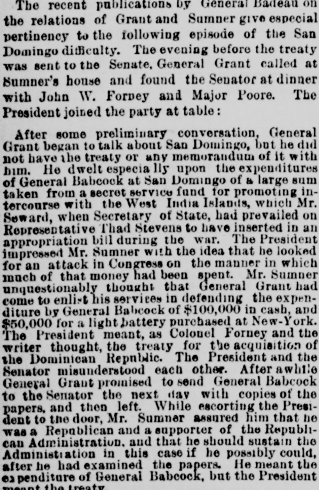
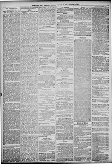

Sumner unquestionably “thought that General Grant had come to enlist hisSumner indudablemente «pensó que el general Grant había venido a lograr su
New-York Tribune. New York [N.Y.], January 23, 1887. Page 6. Published by New York Tribune. A daily newspaper, 1866–1924.New-York Tribune. New York [N.Y.], 23 de enero de 1887. Página 6. Publicado por New York Tribune. Periódico diario, 1866–1924. View the originalVer el original


See the full pageVer la página completaPresident Grant and Senator Sumner misunderstood each other during a meeting, with Grant referring to the treaty for the acquisition of the Dominican Republic while Sumner believed they were discussing General Babcock's expenditures of $100,000 in cash and $24,000 for a light battery. The following morning, General Babcock visited Senator Sumner with a copy of the treaty, but Sumner showed immediate signs of disapproval upon hearing the preamble and the stipulation regarding President Grant's influence to secure congressional popularity for the annexation.El presidente Grant y el senador Sumner sufrieron una confusión recíproca durante una reunión: Grant aludía al tratado para la adquisición de la República Dominicana, en tanto que Sumner entendió que deliberaban acerca de las erogaciones del general Babcock, ascendentes a 100.000 pesos en efectivo y 24.000 para una batería ligera. A la mañana siguiente, Babcock entregó al senador Sumner un ejemplar del convenio, manifestando el legislador su inmediata repulsa nada más conocer el preámbulo y la estipulación relativa al influjo presidencial para concitar el respaldo legislativo a la anexión.
FULL TEXT:TEXTO COMPLETO:
The recent publications by General Badeau on the relations of Grant and Sumner give especial pertinency to the following episode of the San Domingo difficulty. The evening before the treaty was sent to the Senate, General Grant called at Sumner's house and found the Senator at dinner with John W. Forney and Major Poore. The President joined the party at table:Las recientes publicaciones del general Badeau sobre las relaciones de Grant y Sumner dan especial pertinencia al siguiente episodio de la dificultad de Santo Domingo. La noche anterior a que el tratado fuera enviado al Senado, el general Grant llamó a la casa de Sumner y encontró al Senador cenando con John W. Forney y el mayor Poore. El Presidente se unió al grupo en la mesa:
After some preliminary conversation, General Grant began to talk about San Domingo, but he did not have the treaty or any memorandum of it with him. He dwelt especially upon the expenditures of General Babcock at San Domingo of a large sum taken from a secret service fund for promoting intercourse with the West India Islands, which Mr. Seward, when Secretary of State, had prevailed on Representative Thad Stevens to have inserted in an appropriation bill during the war. The President impressed Mr. Sumner with the idea that he looked for an attack in Congress on the manner in which much of that money had been spent. Mr. Sumner unquestionably thought that General Grant had come to enlist his services in defending the expenditure by General Babcock of $100,000 in cash, and $50,000 for a light battery purchased at New-York. The President meant, as Colonel Forney and the writer thought, the treaty for the acquisition of the Dominican Republic. The President and the Senator misunderstood each other. After awhile General Grant promised to send General Babcock to the Senator the next day with copies of the papers, and then left. While escorting the President to the door, Mr. Sumner assured him that he was a Republican and a supporter of the Republican Administration, and that he should sustain the Administration in this case if he possibly could, after he had examined the papers. He meant the expenditure of General Babcock, but the President meant the treaty.Después de alguna conversación preliminar, el general Grant comenzó a hablar sobre Santo Domingo, pero no tenía el tratado ni memorándum alguno de él consigo. Se detuvo especialmente en los gastos del general Babcock en Santo Domingo de una gran suma tomada de un fondo del servicio secreto para promover el comercio con las Islas de las Indias Occidentales, que el Sr. Seward, cuando era Secretario de Estado, había persuadido al Representante Thad Stevens de insertar en un proyecto de asignaciones durante la guerra. El Presidente impresionó al Sr. Sumner con la idea de que esperaba un ataque en el Congreso sobre la manera en que mucho de ese dinero había sido gastado. El Sr. Sumner indudablemente pensó que el general Grant había venido a enlistar sus servicios en la defensa del gasto por el general Babcock de $100,000 en efectivo, y $50,000 por una batería ligera comprada en Nueva York. El Presidente se refería, como el coronel Forney y el escritor pensaron, al tratado para la adquisición de la República Dominicana. El Presidente y el Senador se malentendieron mutuamente. Después de un rato el general Grant prometió enviar al general Babcock al Senador al día siguiente con copias de los documentos, y entonces se fue. Mientras acompañaba al Presidente a la puerta, el Sr. Sumner le aseguró que era un Republicano y un partidario de la Administración Republicana, y que sostendría a la Administración en este caso si posiblemente pudiera, después de haber examinado los documentos. Se refería al gasto del general Babcock, pero el Presidente se refería al tratado.
This collection gathers the coverage of the Dominican Republic in the American press, in the order it was published.Esta colección reúne la cobertura de la República Dominicana en la prensa estadounidense, en el orden en que se publicaron.